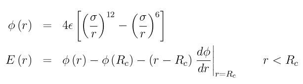

pair_style lj/smooth/linear command¶
pair_style lj/smooth/linear/omp command¶
Syntax¶
pair_style lj/smooth/linear Rc
- Rc = cutoff for lj/smooth/linear interactions (distance units)
Examples¶
pair_style lj/smooth/linear 5.456108274435118
pair_coeff * * 0.7242785984051078 2.598146797350056
pair_coeff 1 1 20.0 1.3 9.0
Description¶
Style lj/smooth/linear computes a LJ interaction that combines the standard 12/6 Lennard-Jones function and subtracts a linear term that includes the cutoff distance Rc, as in this formula:
At the cutoff Rc, the energy and force (its 1st derivative) will be 0.0.
The following coefficients must be defined for each pair of atoms types via the pair_coeff command as in the examples above, or in the data file or restart files read by the read_data or read_restart commands, or by mixing as described below:
- epsilon (energy units)
- sigma (distance units)
- cutoff (distance units)
The last coefficient is optional. If not specified, the global value for Rc is used.
Styles with a cuda, gpu, intel, kk, omp, or opt suffix are functionally the same as the corresponding style without the suffix. They have been optimized to run faster, depending on your available hardware, as discussed in Section_accelerate of the manual. The accelerated styles take the same arguments and should produce the same results, except for round-off and precision issues.
These accelerated styles are part of the USER-CUDA, GPU, USER-INTEL, KOKKOS, USER-OMP and OPT packages, respectively. They are only enabled if LAMMPS was built with those packages. See the Making LAMMPS section for more info.
You can specify the accelerated styles explicitly in your input script by including their suffix, or you can use the -suffix command-line switch when you invoke LAMMPS, or you can use the suffix command in your input script.
See Section_accelerate of the manual for more instructions on how to use the accelerated styles effectively.
Mixing, shift, table, tail correction, restart, rRESPA info:
For atom type pairs I,J and I != J, the epsilon and sigma coefficients and cutoff distance can be mixed. The default mix value is geometric. See the “pair_modify” command for details.
This pair style does not support the pair_modify shift option for the energy of the pair interaction.
The pair_modify table option is not relevant for this pair style.
This pair style does not support the pair_modify tail option for adding long-range tail corrections to energy and pressure, since the energy of the pair interaction is smoothed to 0.0 at the cutoff.
This pair style writes its information to binary restart files, so pair_style and pair_coeff commands do not need to be specified in an input script that reads a restart file.
This pair style can only be used via the pair keyword of the run_style respa command. It does not support the inner, middle, outer keywords.
Restrictions¶
none